O que é Lixo Eletrônico?
Sabe aquele fone que só funciona de um lado, o carregador com mau contato ou aquele celular antigo esquecido na gaveta? Tudo isso é "Resíduo de Equipamentos Eletroeletrônicos" (REEE), popularmente conhecido como Lixo Eletrônico ou E-Lixo. Quando esses aparelhos chegam ao fim da vida útil e são jogados no lixo comum, eles liberam substâncias químicas pesadas que poluem o solo e a água. Mas a boa notícia é: quase tudo neles pode ser reciclado, reaproveitado e transformar a nossa cidade num lugar muito mais sustentável!
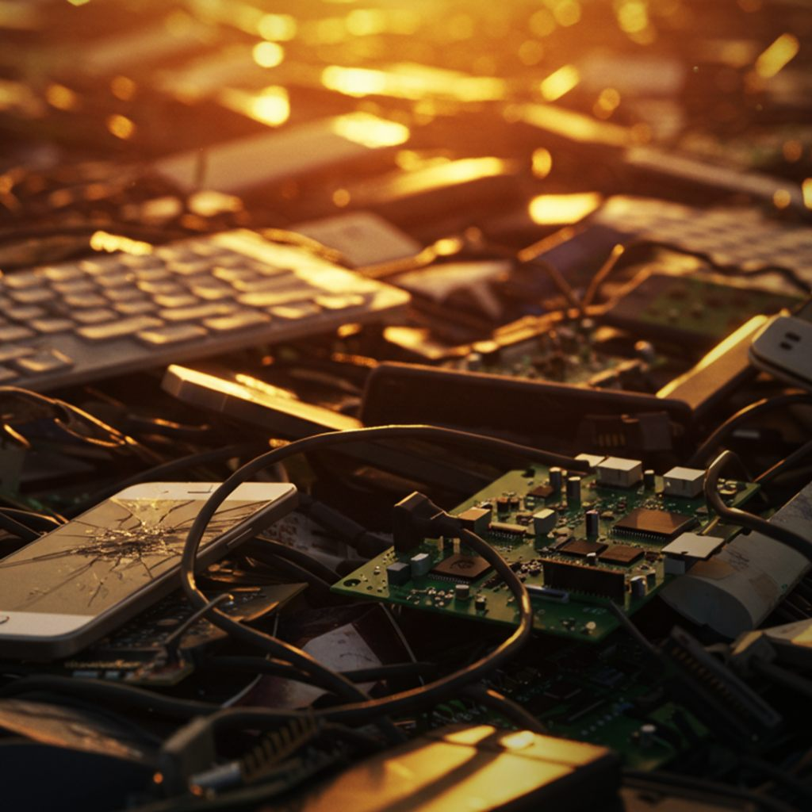
As 4 categorias do E-Lixo
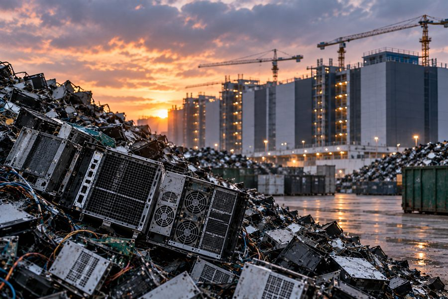
Linha Verde
Equipamentos de informática, comunicação e tecnologia.
Desktops, notebooks, celulares, tablets, mouses, teclados, roteadores e impressoras.
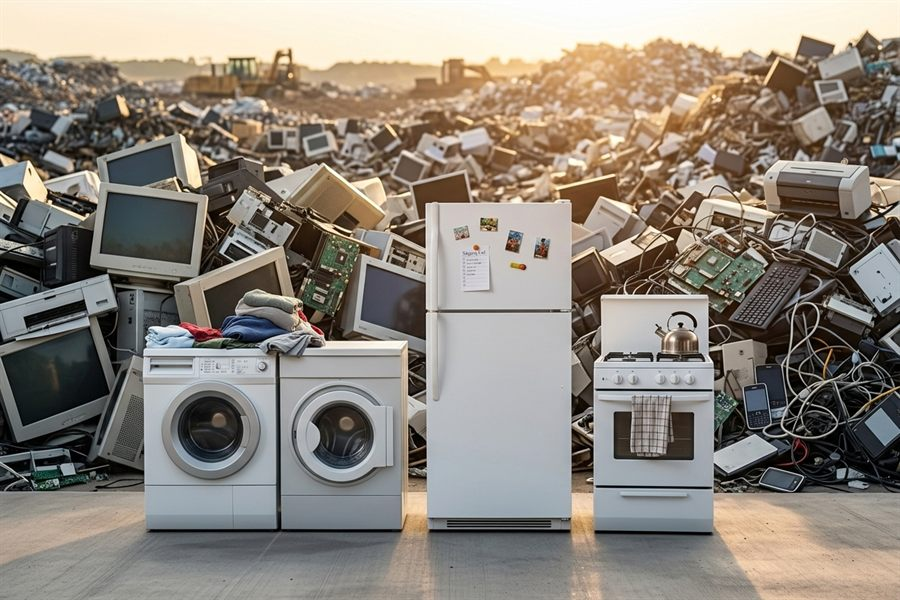
Linha Branca
Eletrodomésticos de grande porte para cozinha e lavanderia.
Geladeiras, micro-ondas, fogões, máquinas de lavar louça/roupa e freezers.
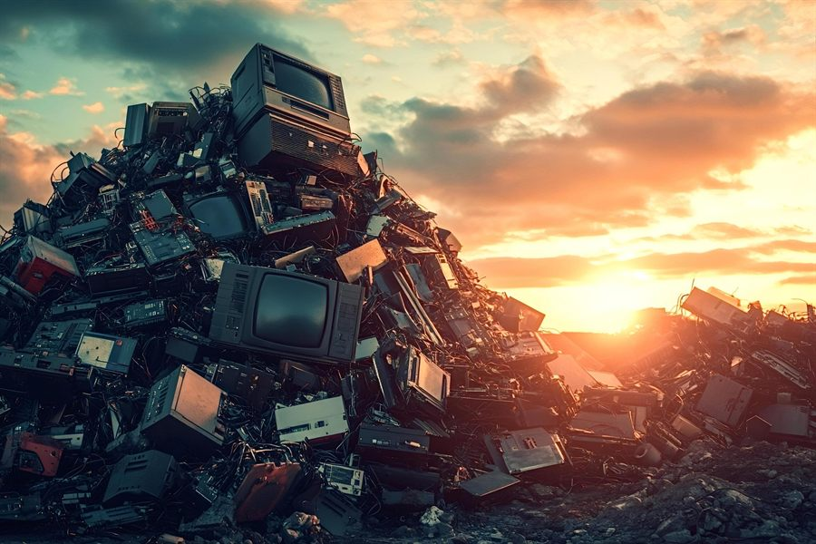
Linha Marrom
Equipamentos de áudio, vídeo e entretenimento.
Televisores, monitores, aparelhos de som, home theaters e gravadores.
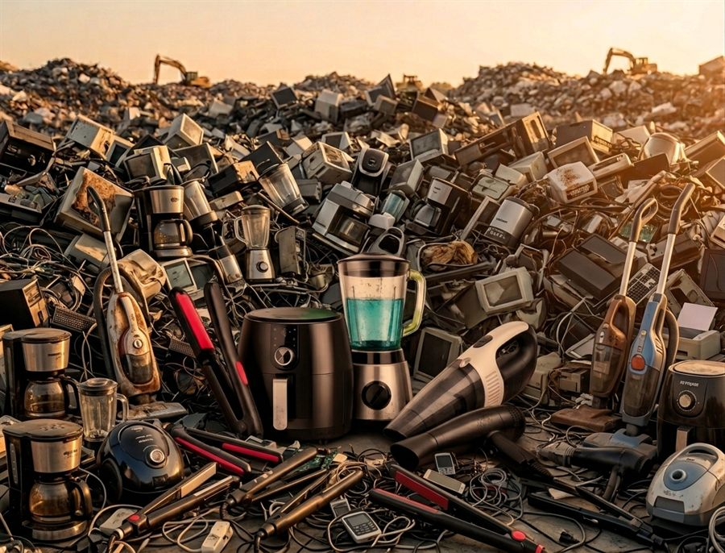
Linha Azul
Eletroportáteis e utensílios domésticos menores.
Secadores de cabelo, liquidificadores, batedeiras, ferros de passar e aspiradores de pó.
Classificação Técnica dos Resíduos
Perigosos ⚠️
Resíduos que apresentam riscos à saúde e ao meio ambiente por conterem metais pesados e substâncias tóxicas (como chumbo, mercúrio e cádmio presentes em baterias, pilhas, placas de circuito e telas CRT/LCD antigas). Precisam de manuseio e descarte especial.
Não Perigosos ✅
Materiais descartados que não apresentam toxicidade imediata (como carcaças plásticas, suportes de metal e fios encapados sem componentes tóxicos livres). Podem ser triados e diretamente reciclados na indústria.
Exemplos de Lixo Eletrônico
Clique em qualquer imagem para ampliar e ver de perto o que vira E-Lixo lá em casa.
Linha Verde
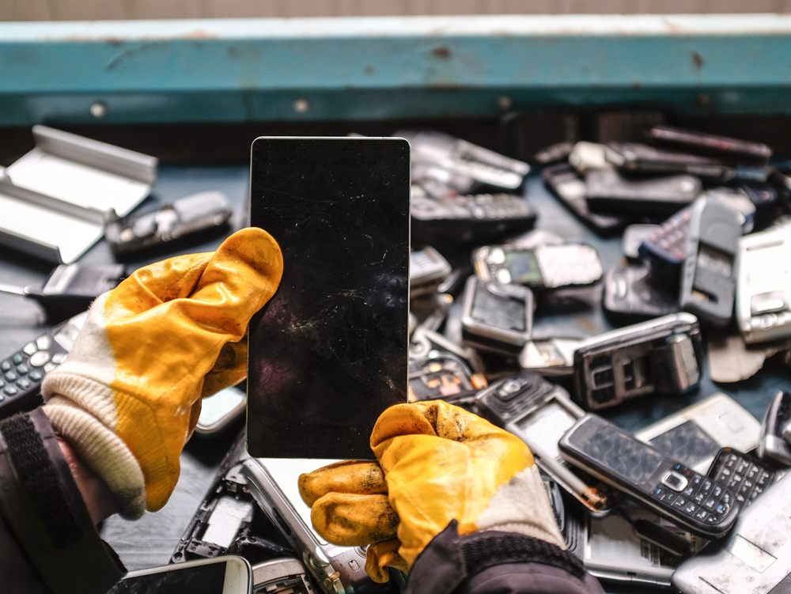
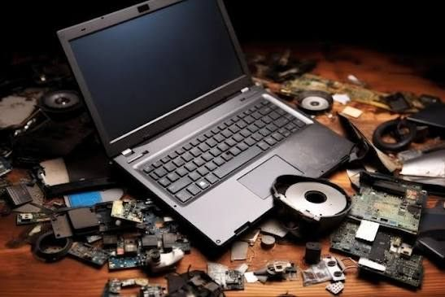
Linha Branca
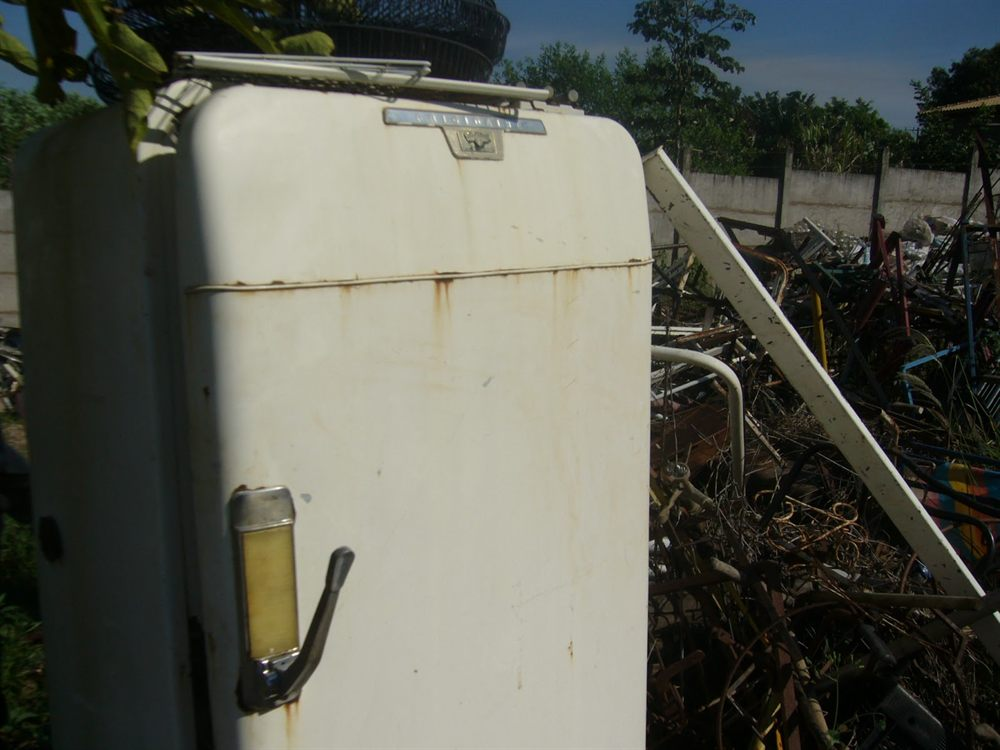
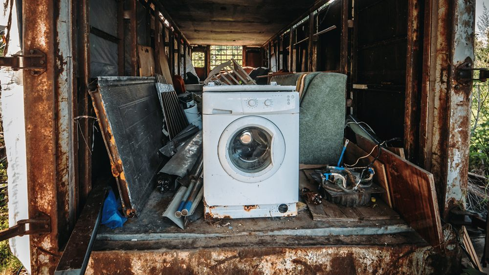
Linha Marrom
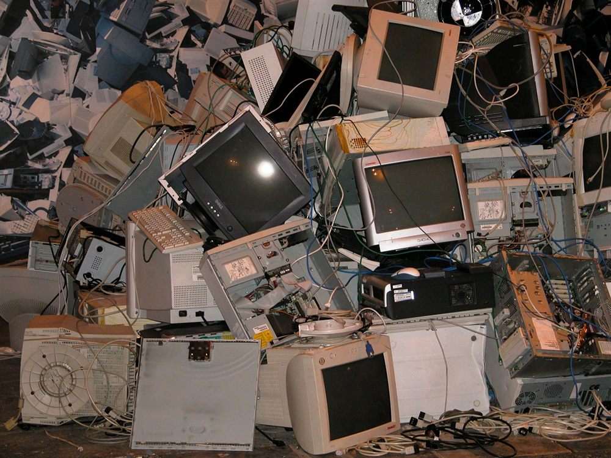
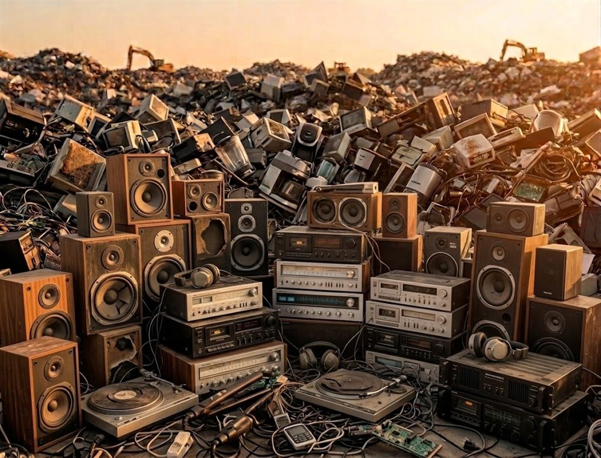
Linha Azul
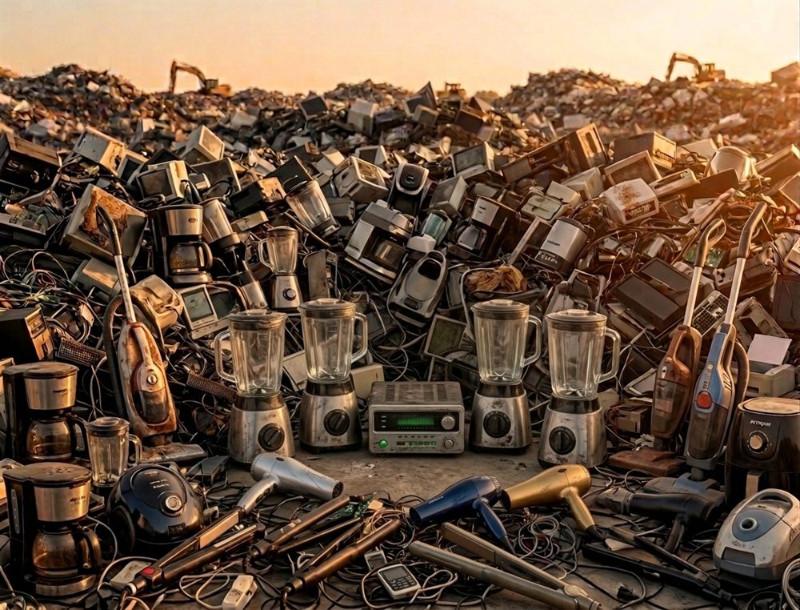
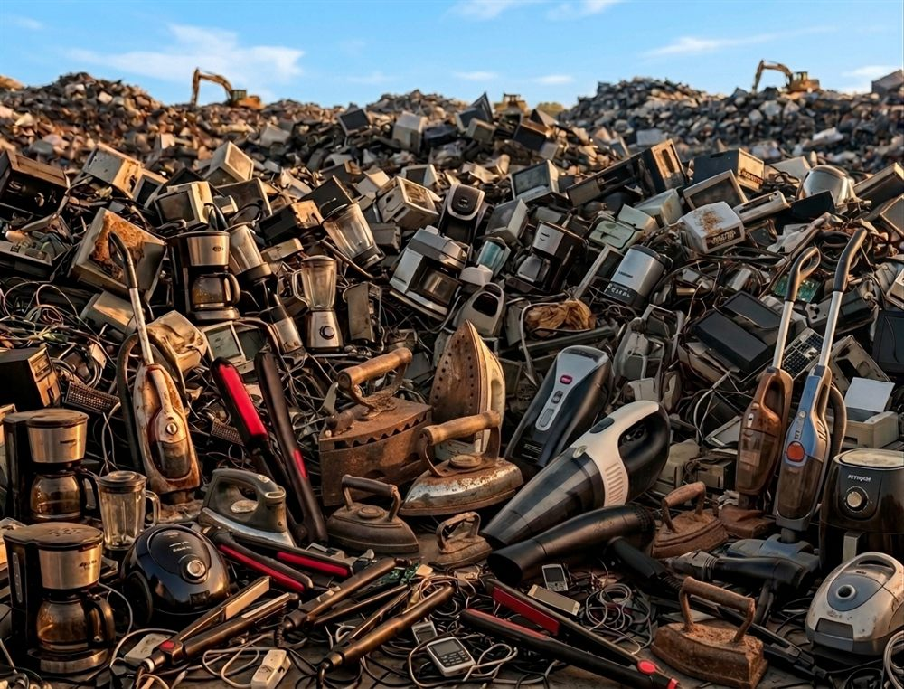
Como Descartar Corretamente?
Siga o passo a passo e marque cada etapa concluída. Bora agir!
Lixo eletrônico misturado com lixo orgânico vai parar em aterros e contamina o meio ambiente.
Reúna cabos soltos, pilhas, aparelhos quebrados e baterias estufadas.
Se for descartar celulares, computadores ou HDs, faça backup e restaure as configurações de fábrica para sua segurança.
Leve os itens até um ponto de coleta especializado na sua região.
Onde levar seu E-Lixo em São Paulo
ABREE
Associação Brasileira de Reciclagem de Eletroeletrônicos e Eletrodomésticos. Encontre PEVs e pontos de coleta em SP por CEP.
Acessar ABREEGreen Eletron
Gestora para reciclagem de eletroeletrônicos e pilhas com diversos pontos na capital paulista.
Acessar Green EletronJLA Reversa
Empresa especializada na coleta, logística reversa e reciclagem segura de e-lixo em São Paulo.
Acessar JLA ReversaRecicla Sampa
Movimento de conscientização da Prefeitura de SP para localização de pontos de coleta e ecomóveis.
Acessar Recicla Sampa